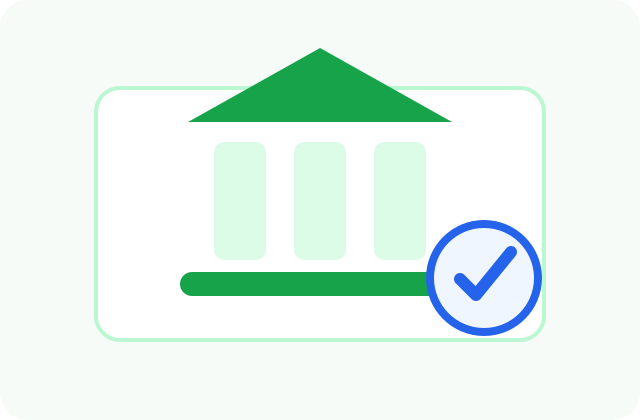

주거지원 · 마지막 확인일 2026-06-24
버팀목 전세자금대출 신청 전 확인해야 할 조건
버팀목 전세자금대출은 무주택 세대의 전세 보증금 마련을 돕기 위한 주택도시기금 대출 상품입니다. 일반 전세대출보다 금리 부담이 낮을 수 있지만, 소득·자산·주택 조건과 임대차계약 요건을 충족해야 합니다.

핵심 요약
- 무주택 세대주 또는 세대주 예정자를 중심으로 심사합니다.
- 부부합산 소득, 순자산, 임차보증금 한도 기준을 확인합니다.
- 임대차계약 체결과 보증금 일부 납부가 필요할 수 있습니다.
- 기금e든든 또는 취급 은행에서 상담과 신청을 진행합니다.
- 계약 전 대출 가능 주택인지 먼저 확인하는 것이 안전합니다.
신청 대상
대상은 주택을 소유하지 않은 세대이며, 세대주 요건과 소득·자산 기준을 충족해야 합니다. 신혼부부, 청년, 중소기업 취업 청년 등 세부 상품에 따라 조건과 한도가 달라질 수 있습니다.
세대원 중 주택을 보유한 사람이 있는지, 현재 이용 중인 전세대출이 있는지, 임차주택의 보증금이 기준 안에 들어오는지도 함께 확인해야 합니다.
지원 내용
임차보증금의 일정 비율 안에서 전세자금을 대출받을 수 있으며, 금리와 한도는 상품 유형과 소득 구간에 따라 달라집니다. 대출 실행 전 보증기관 심사와 은행 심사를 거쳐야 하므로 계약 일정과 잔금일을 넉넉히 잡는 것이 좋습니다.
계약 전 체크포인트
- 등기부등본에서 소유자, 근저당, 압류 등 권리관계를 확인합니다.
- 임대인이 실제 소유자인지 계약서 정보와 등기부가 일치하는지 봅니다.
- 전입신고와 확정일자를 받을 수 있는 주택인지 확인합니다.
- 보증보험 또는 보증기관 심사가 가능한 주택인지 은행에 문의합니다.
- 잔금일 전에 대출 심사 기간이 충분한지 확인합니다.
신청 방법
- 주택도시기금 사이트에서 본인에게 맞는 전세자금 상품을 확인합니다.
- 임대차계약을 체결하고 계약금 납부 증빙을 준비합니다.
- 기금e든든 또는 은행에서 사전 심사와 대출 신청을 진행합니다.
- 보증 심사와 은행 심사 후 잔금일에 맞춰 대출이 실행됩니다.
준비 서류
신분증, 주민등록등본, 가족관계증명서, 건강보험자격득실확인서, 소득금액증명, 재직증명서, 임대차계약서, 계약금 영수증, 임차주택 등기사항전부증명서 등이 필요할 수 있습니다.
주의사항
계약하려는 주택이 대출 가능 주택인지 먼저 확인해야 합니다. 불법건축물, 권리관계가 복잡한 주택, 보증 가입이 어려운 주택은 대출이 거절될 수 있습니다. 계약 후 대출이 거절되면 계약금 문제가 생길 수 있으므로 특약과 상담을 꼼꼼히 확인하세요.